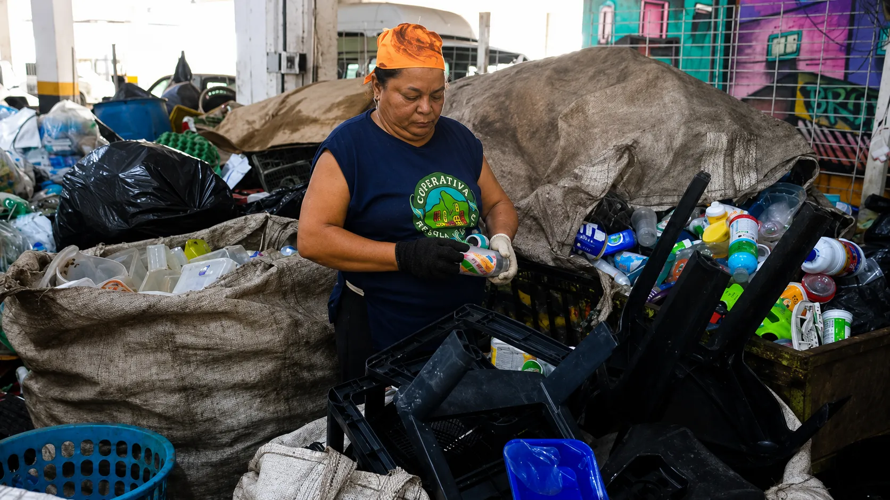
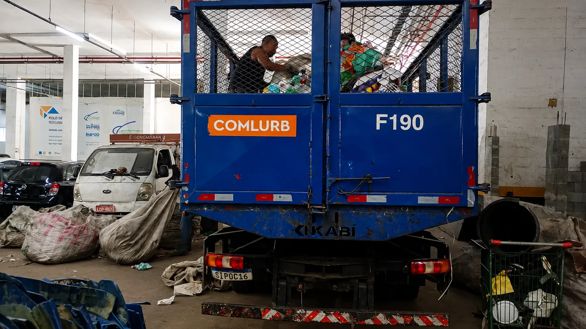
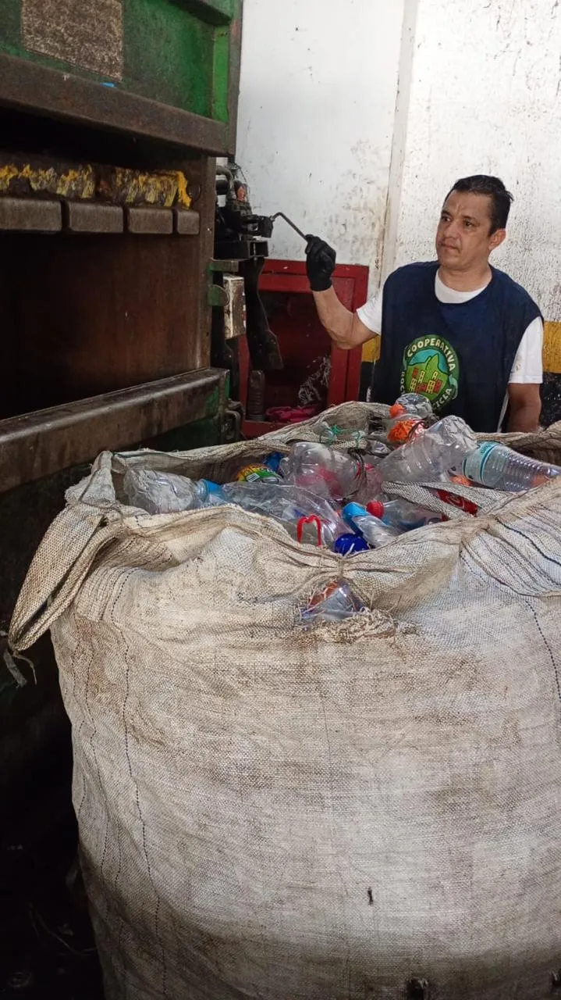
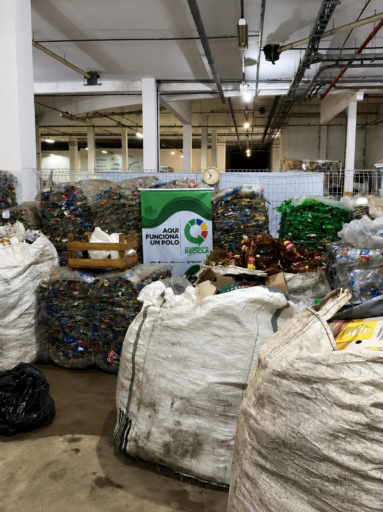
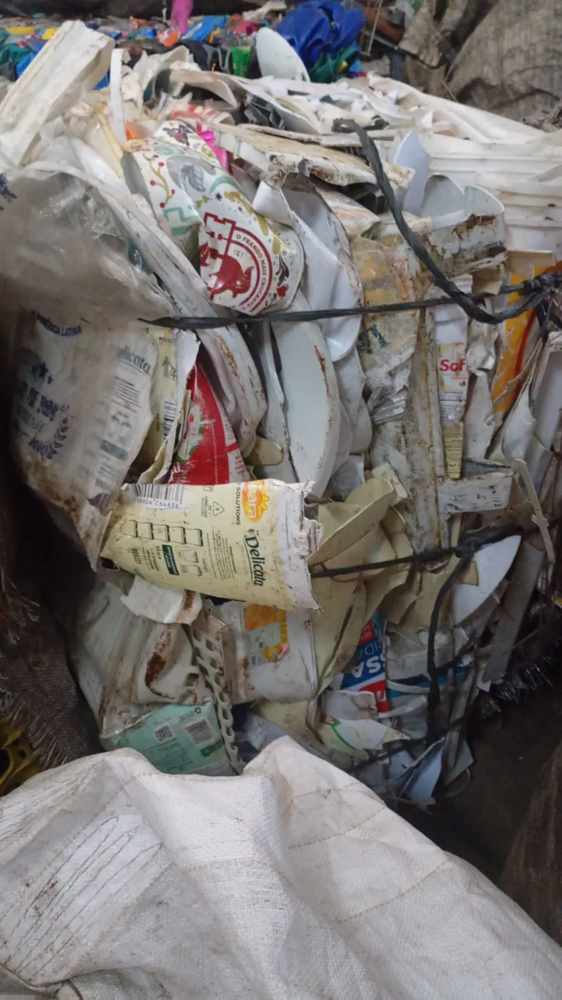
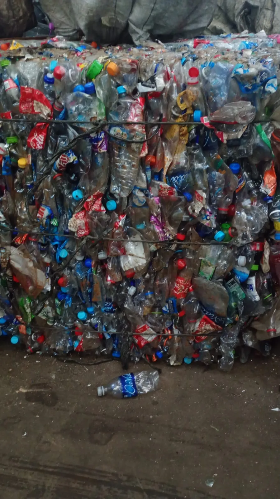
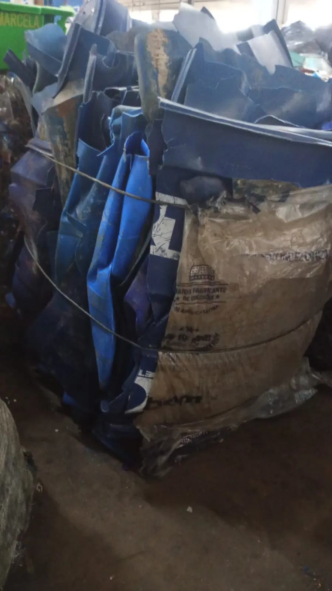
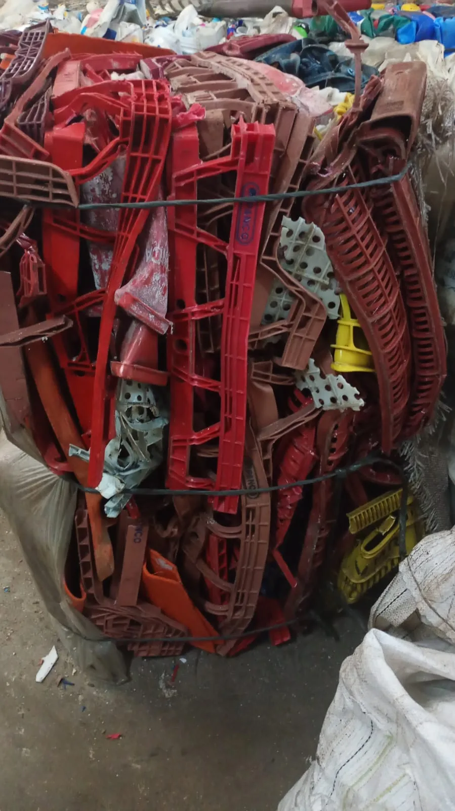
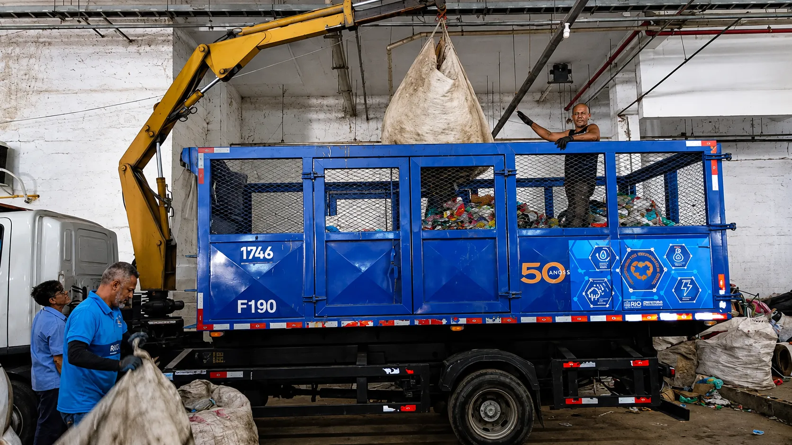

Riscos Fiscais
e Desperdício
Quando o resíduo não tem destino, quem paga são as encostas, as famílias e o seu balanço.
Desde 2017 • Rocinha • Rio de Janeiro
Da Rocinha para o mundo. Coleta seletiva, triagem e logística reversa que geram impacto ambiental real, renda e inclusão social.
Da coleta ao certificado
Cada tonelada sem destino certo vira passivo na sua próxima auditoria. Aqui, vira certificação, renda e impacto real para quem mais precisa.
Quando o resíduo não tem destino, quem paga são as encostas, as famílias e o seu balanço.
Cada material coletado passa por triagem técnica no galpão da Rocinha e sai com rastreabilidade total para sua auditoria.
São os catadores cooperados da Rocinha que transformam seu resíduo em CDF, em renda e em impacto real para a comunidade.
Roteiros dedicados para empresas, condomínios e eventos — frequência e horários adaptados à sua operação.
Gestão completa do retorno de embalagens pós-consumo, em conformidade com a PNRS e as exigências legais.
Emissão do CDF e relatórios técnicos prontos para auditorias de ESG, PNRS e certificações ambientais.
Diagnóstico e plano de gestão de resíduos para condomínios, comércios e órgãos públicos — do levantamento ao relatório.
Processo técnico no galpão da Rocinha — cada material separado com precisão para maximizar seu valor de revenda.
Cada material tem destino registrado e comprovado — do ponto de coleta ao processamento final.
Cada fardo prensado é uma tonelada a menos em aterro — e renda gerada dentro da Rocinha.
Nosso galpão na Rocinha opera com rastreabilidade total. Cada material coletado passa por triagem técnica, prensagem e destinação correta — gerando CDF, relatórios de ESG e, acima de tudo, dignidade para quem trabalha.
Quero ser parceiro



Cada material coletado tem um caminho definido — triado, prensado e destinado corretamente pelo nosso polo na Rocinha.





A Cooperativa Rocinha Recicla atua na coleta seletiva, triagem e destinação correta de resíduos — promovendo impacto ambiental positivo, geração de renda e inclusão social. Ao longo dos anos, ampliamos parcerias com empresas e órgãos públicos, levando seriedade institucional a um trabalho que começou na base da comunidade.
Pessoas que vivem, trabalham e acreditam nessa história.
Acompanho e admiro o trabalho da Cooperativa Rocinha Recicla, porque ela representa muito mais do que reciclagem. Representa criatividade, empreendedorismo, compromisso social e a capacidade de transformar desafios em oportunidades.
Aqui, reciclagem não é apenas destino de materiais — é geração de oportunidades, fortalecimento dos catadores e construção de comunidade. Mais do que gerenciar resíduos, a Rocinha Recicla ajuda a construir dignidade, oportunidades e futuro.
Minha experiência com a cooperativa foi transformadora. Eu estava desempregada, com filhos pequenos e aluguel para pagar, quando ouvi falar sobre a Cooperativa Rocinha Recicla e decidi conhecer o trabalho realizado.
Ao chegar lá, conheci os administradores, que me deram a oportunidade de trabalhar com eles. Trabalho até hoje na mesma cooperativa que me acolheu anos atrás e sou muito grata por fazer parte desse trabalho incrível, que transforma vidas.
Quando cheguei à cooperativa, estava em situação de vulnerabilidade social. Graças a Deus e ao apoio que encontrei aqui, minha vida começou a mudar.
A Rocinha Recicla me ajudou não apenas a me reintegrar ao mercado de trabalho, mas também a superar o momento difícil em que eu me encontrava. Hoje sou cooperado e tenho muito orgulho de fazer parte dessa história.
A Cooperativa Rocinha Recicla teve um papel fundamental na nossa trajetória, contribuindo com conhecimento, orientação em gestão de negócios e proporcionando um ambiente de colaboração onde desenvolvemos nossas atividades em parceria.
Esse apoio foi essencial para o crescimento e a consolidação do Eco Digital. Somos muito gratos pela excelência dos serviços prestados e pela parceria sólida que se fortalece a cada dia. Juntos, seguimos gerando impacto social, ambiental e oportunidades para a Rocinha.
Definimos juntos os pontos, a frequência e os tipos de material. Nossa equipe recolhe, transporta e leva tudo ao polo de triagem, onde o material é separado e enfardado para destinação correta.
Basta enviar uma mensagem pelo formulário ou WhatsApp. Avaliamos o volume e o tipo de resíduo, montamos um plano de coleta e formalizamos a parceria — com documentação ambiental inclusa.
É o retorno de embalagens e resíduos pós-consumo ao ciclo produtivo. Operamos a coleta, a triagem e a destinação desses materiais conforme a Política Nacional de Resíduos Sólidos.
Sim. Emitimos relatórios e comprovantes de destinação que ajudam sua empresa em auditorias, relatórios de ESG e cumprimento de obrigações ambientais.
Atendemos a Rocinha, o entorno e diversas regiões do Rio de Janeiro. Para coletas fora da área, fale conosco para avaliarmos a logística.
Fazemos. Montamos a coleta seletiva do evento, do planejamento à destinação, e entregamos o relatório de impacto ao final.
Estrutura técnica e galpão de triagem preparados para atender a logística reversa de grandes corporações e receber visitas para auditorias de ESG.
Segunda a Sexta: 08h às 17h
Sábado: 08h às 12h
Entre em contato para estruturar o plano de descarte e destinação ideal para o seu negócio.
Emissão de relatórios técnicos e Certificado de Destinação Final pronto para auditorias de ESG.
Roteiros e frequências de coleta adaptados ao volume e à rotina da sua operação.
Seu resíduo gera renda direta, capacitação e dignidade para catadores cooperados da Rocinha.